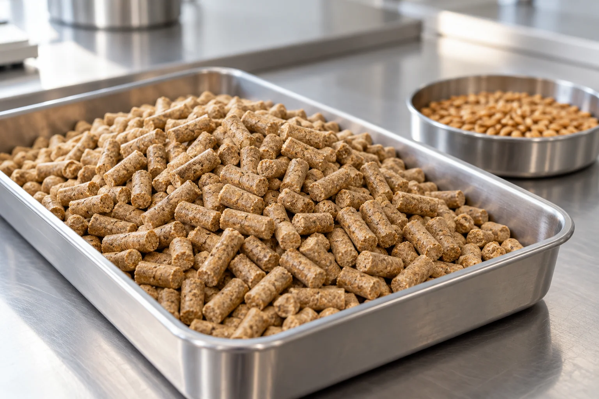

Phytate phosphorus
Phytase breaks down phytate in plant-based feed ingredients.
Review the animal species, diet and phosphorus objective with your technical team.
Phytase and phosphorus utilizationMatch enzyme function to your feed ingredients and production route. Explore phytate phosphorus, dietary protein and poultry diets, then check the relevant SUNSON preparation.
Explore the applications
Begin with the feed component you want to address. Keep nutrient use and retained enzyme activity during manufacturing as separate checks.
Phytase breaks down phytate in plant-based feed ingredients.
Review the animal species, diet and phosphorus objective with your technical team.
Phytase and phosphorus utilizationProtease acts on dietary protein. Young-animal diets are one application in SUNSON's feed range.
Start with the protein ingredients, animal species and production stage.
SFP-MUL02A poultry multi-enzyme preparation combines activities for several feed components, including non-starch polysaccharides.
Identify the main ingredients and the intended poultry stage.
Enzymes for poultry feedUse these SUNSON references to continue the selection discussion. Check the intended use and current product information before planning a trial.
Application starting pointPhytate phosphorus
View PHY10GApplication starting pointSeveral components in poultry-feed ingredients
View SFQ-081Application starting pointProtein digestion in young-animal diets
View SFP-MUL02SUNSON connects strain research, application development and manufacturing. Its sample process includes technical information and storage and use guidance.
Share the intended animal and diet, the production route and the question you want to test.
Review the product reference and technical information with the team. If a sample is appropriate, confirm the storage and use instructions.
Share the conditions, use level and observations. SUNSON can review processing parameters and product selection when a trial misses its objective.
Tell us the animal species and stage, the principal feed ingredients and whether the feed is mash or pelleted. Include the nutritional or processing question you want to review.
Discuss your feed applicationConfirmed inputs in use: company identity and contacts, supplied product materials and the agreed application scope.
Implementation: production domain, enquiry delivery and actual data-processing configuration remain part of the launch work. Forms in this preview do not submit.
Media: concept scenes and packaging positions are layout aids; company media replaces them at the final asset stage.